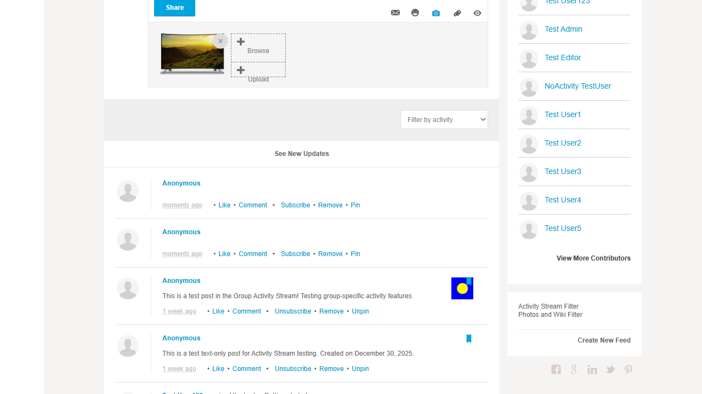
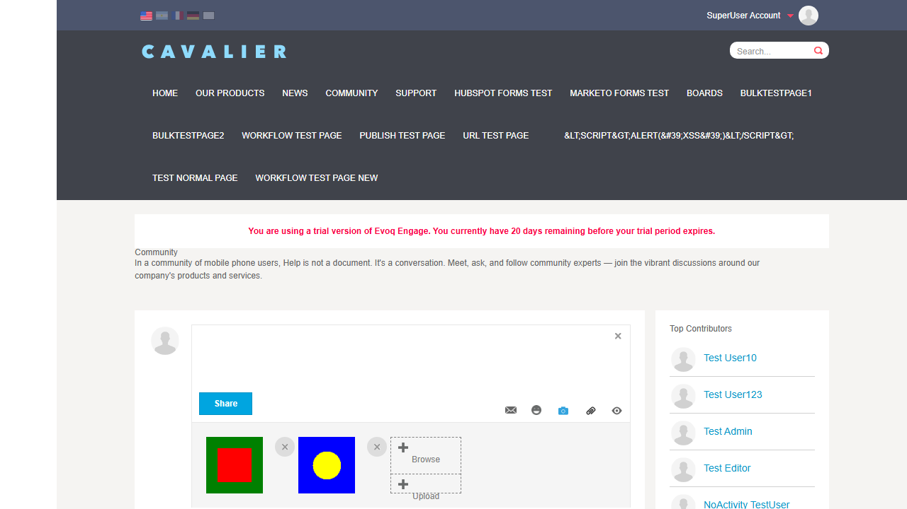
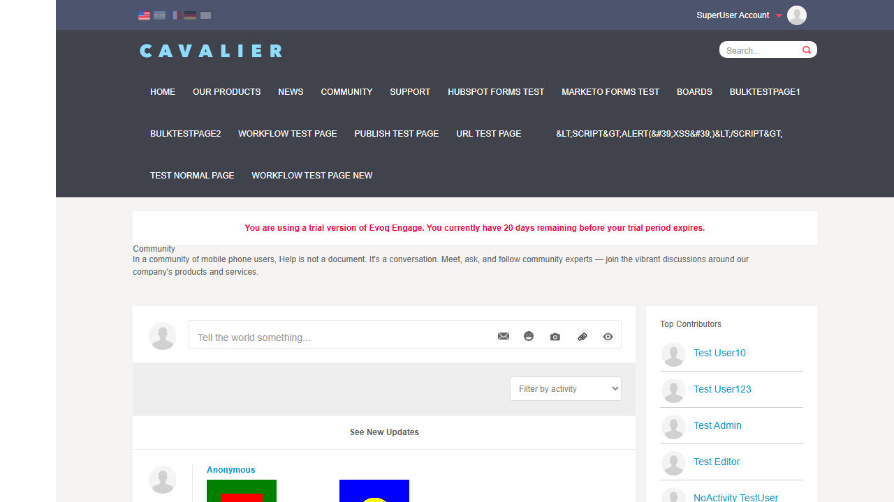
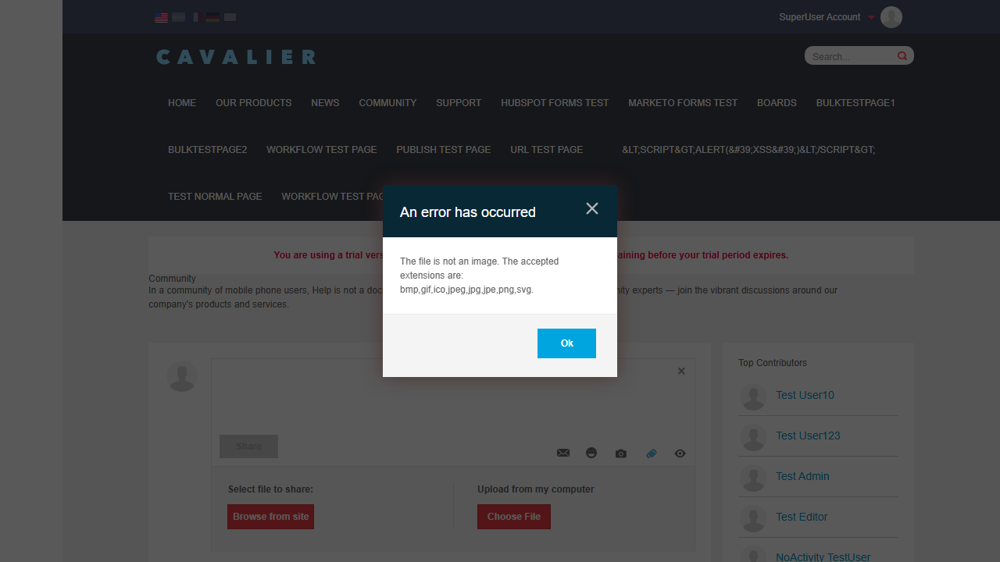
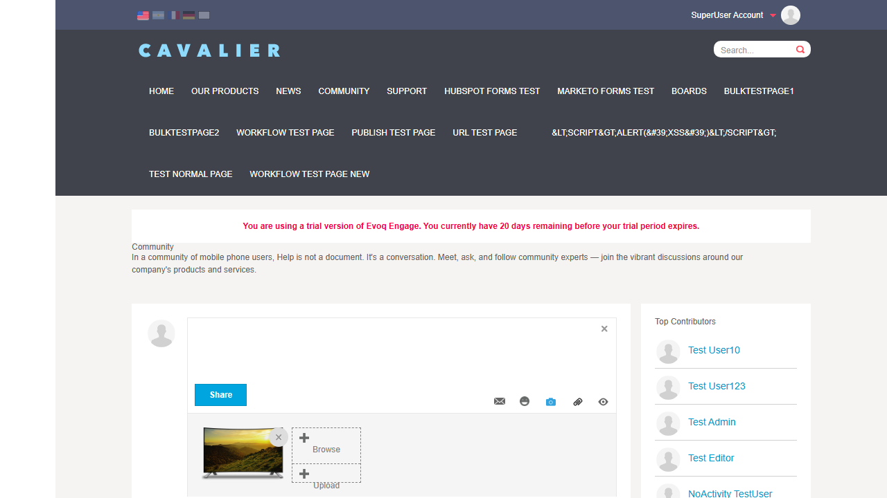
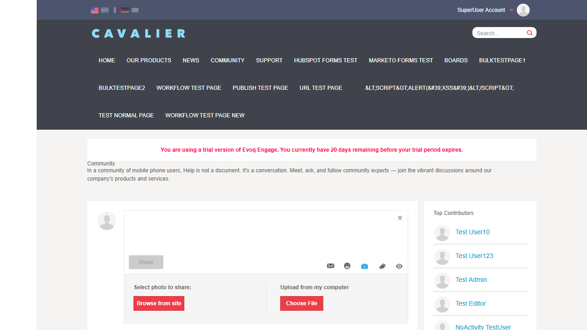
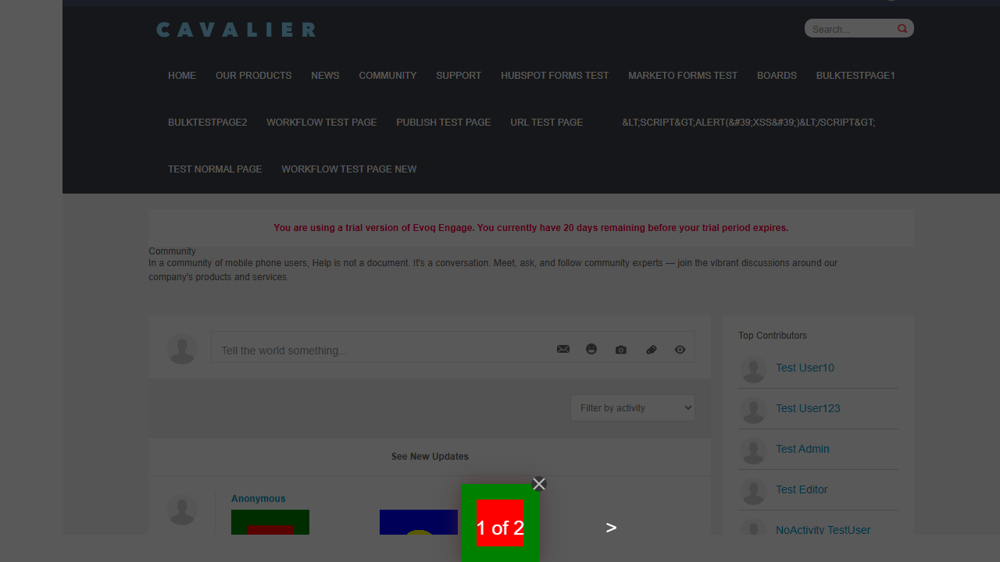

Description: Upload and manage file and image attachments in posts and comments
Feature Priority: High
UI Location: Activity Stream > Create Post > Attachment Button
Test Date: January 6, 2026
Test Summary
7
PASSED
1
FAILED
8
TOTAL
Test 1: Upload Single Image
PASS
What was tested
Verify that a user can upload a single image to an Activity Stream post.
Steps taken:
Navigated to Community page with Activity Stream
Clicked on the camera icon (Share an Image) in the post toolbar
Clicked "Browse from site" to select an existing image
Selected "cavalier-tv.png" from the file list
Clicked "Attach" button
Clicked "Share" to post with the image
Photo upload panel showing Browse from site and Choose File options

Image attached to post with preview and X button to remove
Result: Image was successfully attached and posted. The image appears in the Activity Stream feed.
Test 2: Upload Multiple Images
PASS
What was tested
Verify that a user can upload multiple images to a single post.
Steps taken:
Clicked camera icon to open photo attachment panel
Browsed and selected first image (test_image2.png)
Used Browse button to add second image (test_image639026992557805878.png)
Both images appeared as thumbnails
Posted with both images attached

Two images attached to a single post

Post with multiple images displayed in feed
Result: Multiple images were successfully attached and posted together.
Test 3: Upload Document File
FAIL
What was tested
Verify that a user can upload document files (non-image files) to posts.
Steps taken:
Clicked paperclip icon (Share a File) in the post toolbar
Attempted to select a .txt document file
System displayed error message

Error message showing only image formats are accepted
Issue Found: The Activity Stream only accepts image file formats (bmp, gif, ico, jpeg, jpg, jpe, png, svg). Document files like .txt, .pdf, .doc cannot be attached. This may be by design, but the feature name "File and Image Attachments" suggests document support should be available.
Result: Document upload failed - only image formats are accepted.
Test 4: Upload Unsupported File Type
PASS
What was tested
Verify that the system properly handles and rejects unsupported file types with an appropriate error message.
Steps taken:
Attempted to upload a non-image file
System displayed clear error message listing accepted formats
Clear error message: "The file is not an image. The accepted extensions are: bmp,gif,ico,jpeg,jpg,jpe,png,svg."
Result: System correctly rejects unsupported file types with a clear, informative error message.
Test 5: Delete Attachment Before Posting
PASS
What was tested
Verify that a user can remove an attached image before posting.
Steps taken:
Attached an image to a new post
Located the X button on the image thumbnail
Clicked X button to remove the attachment
Verified image was removed from the post draft

Attached image with X button visible for removal

Image successfully removed - only attachment options remain
Result: Successfully removed attached image before posting using the X button.
Test 6: View Attachment in Post
PASS
What was tested
Verify that users can view image attachments in a lightbox viewer.
Steps taken:
Found a post with image attachments in the feed
Clicked on an image thumbnail
Lightbox viewer opened showing the full-size image
Navigation controls visible for multiple images (1 of 2)
Closed lightbox using Close button

Lightbox viewer showing image with navigation (1 of 2) and close button
Result: Images can be viewed in a full-size lightbox with navigation for multiple images.
Test 7: Download Attachment from Post
PASS
What was tested
Verify that users can download image attachments from posts.
Steps taken:
Located a post with image attachment
Navigated directly to image URL
Verified image is accessible and downloadable
Image accessible via direct URL - can be downloaded using browser save
Result: Images are accessible via direct URLs and can be downloaded using right-click "Save Image As" or by navigating to the image URL directly.
Test 8: Upload Attachment in Comment
PASS
What was tested
Verify that users can attach images to comments on posts.
Steps taken:
Clicked "Comment" link on an existing post
Comment input area expanded showing attachment icons
Comment successfully posted with image attachment visible
Result: Images can be successfully attached to comments and are displayed after posting.
Observations
Document File Support: Despite the feature name "File and Image Attachments", the Activity Stream only supports image file formats. The paperclip icon ("Share a File") also only accepts images. This appears to be a design limitation rather than a bug.
Settings Configuration: The Settings.ascx file shows checkboxes for "Allow Files" and "Allow Photos" which can be configured per module instance. The MaxFiles dropdown allows limiting attachments from 1-10 per post.